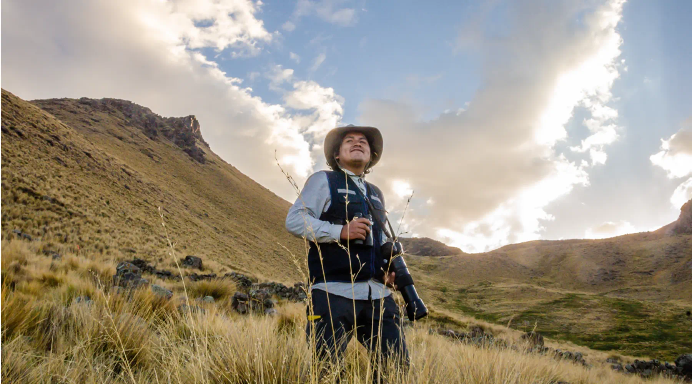
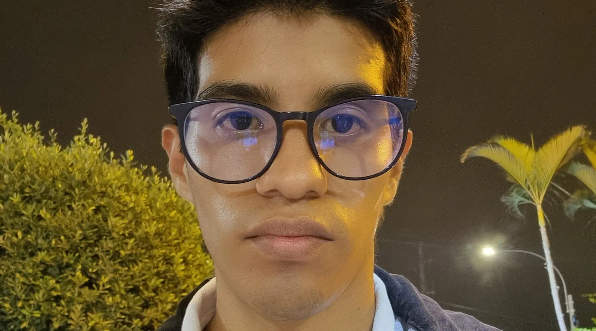
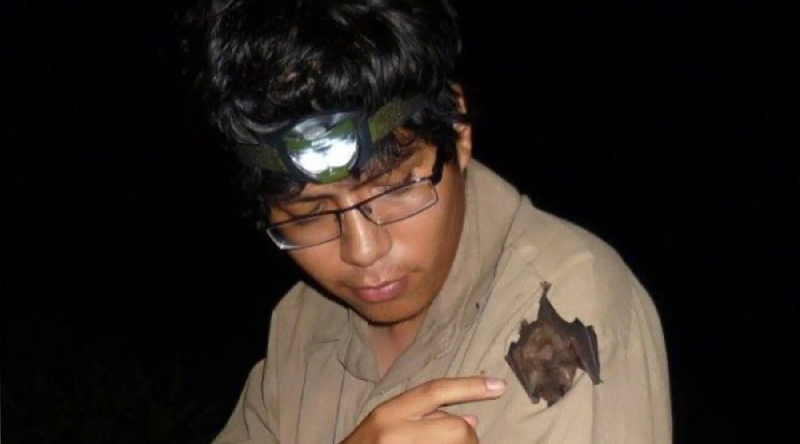
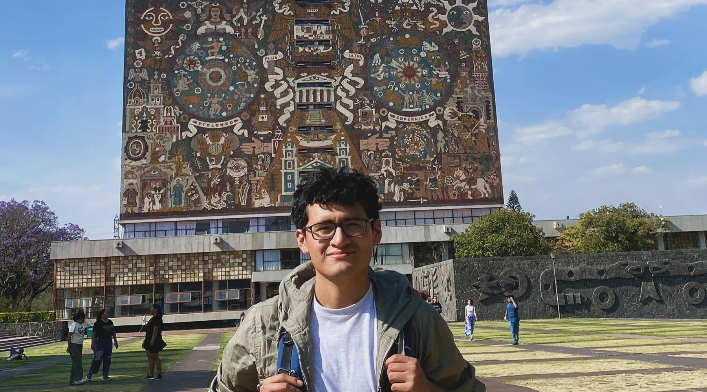

Samay Conservación está conformado por un equipo de jóvenes científicos y artistas que trabajan por la conservación desde el territorio, la ciencia y el arte.

Biólogo peruano - Especializado en el estudio y monitoreo de fauna silvestre, con énfasis en aves, lidera iniciativas que articulan investigación, educación y comunicación para la protección de la fauna silvestre y sus ecosistemas.

Biólogo ambiental - Combina investigación, estudios de salud ambiental y literatura ecológica para integrar la ciencia, el arte y la educación comunitaria para la defensa del ecosistema.

Ecólogo - Investiga interacciones ecológicas, principalmente entre murciélagos y plantas, integrando trabajo en campo, revisión de colecciones científicas y ciencia ciudadana.
Investigadora - Integra genómica, morfología y biogeografía para revelar diversidad oculta de mamíferos sudamericanos, impulsa el fortalecimiento de las colecciones científicas, reconociéndolas como pilares fundamentales para la investigación, la memoria biológica y la conservación.

Mastozoólogo peruano - Estudia la sistemática y biogeografía de mamíferos neotropicales para mejorar la comprensión de la diversidad biológica, promover la conservación de mamíferos, y evidenciar la importancia de los museos de historia natural en un contexto de calentamiento global y pérdida de diversidad.

Genetista y biotecnóloga - Integra biotecnologías reproductivas, biobancos genéticos e implementación de herramientas genómicas accesibles para preservar la diversidad genética de especies en los Andes Tropicales y la Amazonía y el desarrollo de capacidades científicas locales